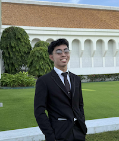

John Neal Caballero | WDD 130

Hello, everyone, I am John Neal Caballero. I prefer you call me by my second name, which is "Neal". I'm 23 years old and from the Philippines, specifically San Pedro City, born and raised there, and still single but also searching. I'm also born in the covenant. I have 3 siblings: an older sister, an older brother, and a younger brother; all of us are returned missionaries, and we served here in the Philippines. As I served on a mission, I learned 2 languages. I'm currently a student here at BYUI online. I already got my first certificate in Fundamentals of Graphic Design, and now, for my second certificate, I am pursuing the Web and computer programming certificate. I have high hopes of learning about web and computer programming. I'm looking forward to new lessons, experiences, and thoughts from all of you for this semester.